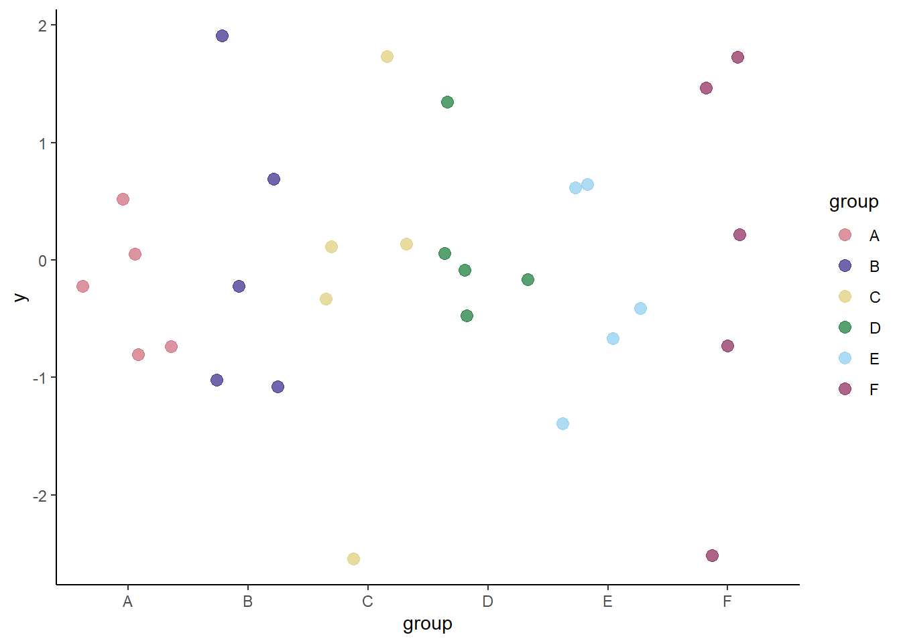
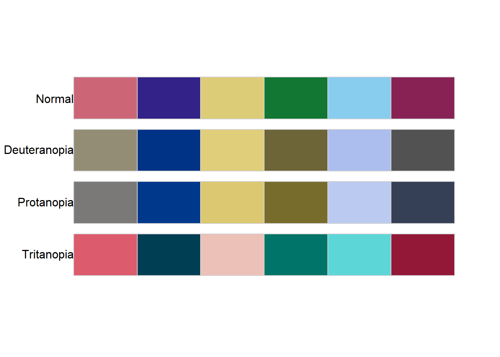
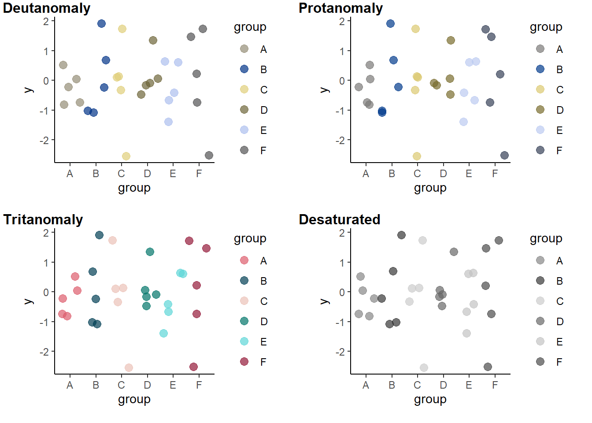
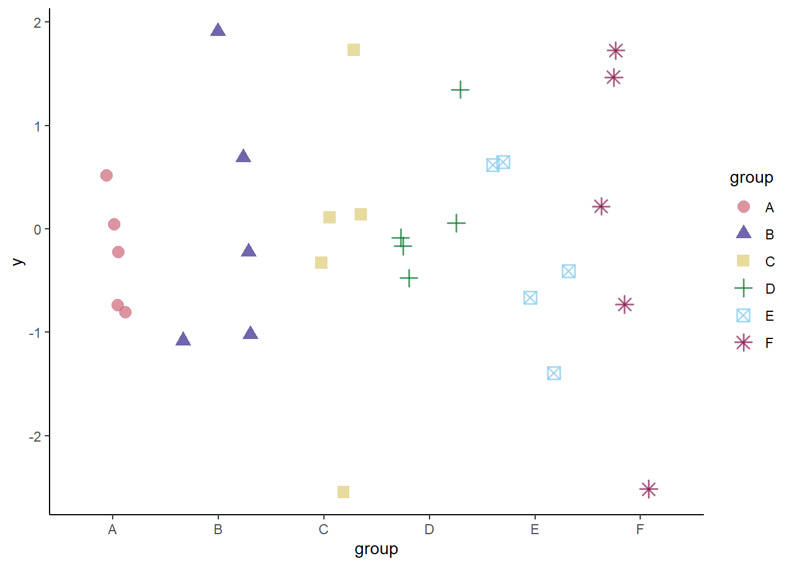
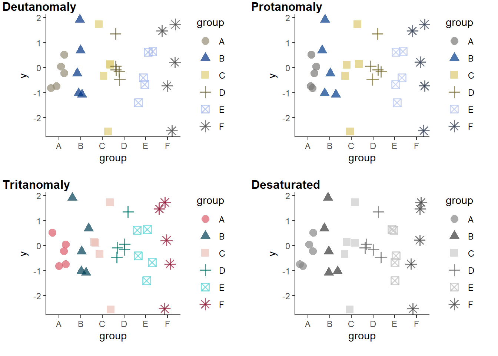

install.packages("colorblindcheck")
install.packages("khroma")It’s much easier to make colorblind-friendly graphs than it used to be; many thoughtful people have developed colorblind-friendly palettes. The site I most frequently see recommended for finding such a palette is Color Brewer. Those palettes are easy to access in R thanks to the {RColorBrewer} package, and they are great! But they were designed for maps, and…. I make mostly scatterplots. Unfortunately, the light colors in some of the most popular palettes just don’t show up well as points on a graph. I was introduced to the {khroma} package a few years back and it has since become my favorite for finding colorblind-friendly palettes that do work well in scatterplots.
The other day, a coworker who was using one of those great {khroma} palettes checked to see if it would print well in grayscale, by copying it into PowerPoint and converting it. And ….. it didn’t work well. We hadn’t known it, but colorblind friendly doesn’t necessarily equal grayscale-friendly. I remembered some tools in R that let you investigate how your colors look to those with color deficiencies, and this post is about some of those resources.
Key Links
{colorblindr}package - for any palette and graph you can make in R, use one command (cvd_grid()) to simultaneously see what that graph looks like for the three main forms of colorblindness and in grayscale. You do this in your R session and can investigate graphs you’ve actually made.
- Color Palette Finder on R Graph Gallery - for an existing palette (as collected in the
{paleteer}package), see how it looks in various types of graph, for the three main forms of colorblindness and in grayscale. This is online and can help you find a palette that works for all your needs.
{colorblindcheck}package - for any palette, easily view what it looks like for the three main forms of colorblindness. This package does not include grayscale functionality.
Example of the packages in action
Installation
{colorblindcheck} and {khroma} are simple:
{colorblindr} is not on CRAN, so needs to be installed from GitHub. It depends on {cowplot} (also not on CRAN) and {colorspace}. These installation instructions are lightly modified from the {colorblindr} README. They note it is important to install {cowplot} and {colorspace} before installing {colorblindr}.
remotes::install_github("wilkelab/cowplot")
install.packages("colorspace")
remotes::install_github("clauswilke/colorblindr")Make up some data and a graph
I find myself frequently working with 6 or so groups in my data, so that’s the number I’ll use here. I like the muted palette from {khroma} and though you can call it straight in {ggplot2} with khroma::scale_color_muted(), I also want to investigate the palette with other packages and so pull it out into the vector color_pal.
library(ggplot2)
library(colorblindcheck)
library(colorblindr)
color_pal <- khroma::color("muted")(6)set.seed(2026)
dat <- data.frame(group = rep(c("A", "B", "C", "D", "E", "F"), times = 5),
y = rnorm(30))
p <- ggplot(dat,
aes(group, y, col = group)) +
geom_jitter(size = 3, alpha = 0.7) +
scale_color_manual(values = color_pal) +
theme_classic()
p
colorblindcheck
If you don’t care about grayscale, the simplest way to do this is with {colorblindcheck}.
colorblindcheck::palette_plot(color_pal)
I had to use the :: notation because it turns out {colorblindr} has a function with the same name, and it only shows you the palette - not the extras that simulate colorblindness.
{colorblindcheck} also generates a numeric table if you want more detail on the specs. If you set the argument plot = TRUE inside this function, you get both the table and the plot we already generated. See the package vignette for more details on this table.
colorblindcheck::palette_check(color_pal) name n tolerance ncp ndcp min_dist mean_dist max_dist
1 normal 6 23.70351 15 15 23.70351 51.38998 83.53756
2 deuteranopia 6 23.70351 15 12 17.65883 39.48900 79.44862
3 protanopia 6 23.70351 15 13 11.82298 40.41535 76.03409
4 tritanopia 6 23.70351 15 14 22.17203 48.01540 78.37358colorblindr
This is also very simple and quite possibly my new favorite R function. It re-makes my graph, simulating the different varieties of colorblindness and showing what it looks like in grayscale (‘desaturated’) too! We can see groups C and E are difficult to distinguish from each other in grayscale, and groups B, D, and F look pretty similar too.
colorblindr::cvd_grid(p)
Additional note
Of course there’s more to a graph than point color - in the case of the simulated data frame and these graphs, I could easily use point shape to differentiate the groups in addition to color. That will also make the graph more robust to the similarities between groups in the grayscale version.
p2 <- ggplot(dat,
aes(group, y,
col = group,
shape = group)) +
geom_jitter(size = 3, stroke = 1, alpha = 0.7) +
scale_color_manual(values = color_pal) +
theme_classic()
p2
Using stroke inside a geom_point() or similar layer makes the outlines of non-filled shapes thicker. This trick was taught to me by the same person that was interested in grayscale.
And let’s see how it looks all the different ways with {colorblindr}.
cvd_grid(p2)
Yep, works great!
Wrap-up
This post focused on tools used within R. But if you haven’t picked a color palette or made graphs yet, check out the Color Palette Finder on R Graph Gallery - it’s another great resource. Not only does it help with colors, but it’s introduced me to packages like {nationalparkcolors} and {fishualize} (new favorite package name? Lots of new favorites for me this week).
I hope this is helpful! Good coding!